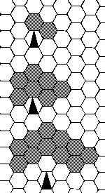
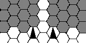
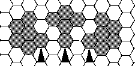
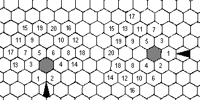
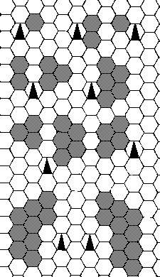
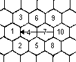
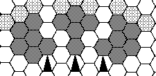
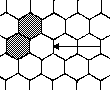

Basic Concepts
Definitions
Required Information
Each combatant's abilities are dependent on pre-determined characteristics listed below. The assignment of these numbers is dealth with in the Appendices. The scales are defined as linear, so that a combatant with Strength 12 is twice as strong as one with Strength 6. The upper limits are guidelines only, but strange results may occur if these are exceeded.
Strength — Measure of combatant's ability to apply force, affects ability to hurt opponents. (1–20)
Dexterity — Measure of combatant's co-ordination, affects ability to use a weapon. (1–20)
Constitution — Measure of combatant's physical fitness, affects stamina in a fight. (1–20)
Willpower — Measure of combatant's mental self-control, affects ability to fight when wounded. (1–20)
Training — Measure of a combatant's knowledge of the use of a particular weapon. (1–10)
Each combatant's equipment is also pre-determined. One or more weapons and possibly a shield are selected from the Weapons Table, and an armour type selected from the Armour Table. Limitations are again discussed in the appendices.
Calculation Of Abilities
The pre-determined characteristics are used with data from the tables to calculate the figures required for combat.
Skill-Factor: Calculated for each weapon, including shield if carried; measures ability to use weapon.
Skill = (Dexterity/4) x ln(Training + 1) x Armour Factor 4
Armour Factor is read from Armour Table. ln is natural logarithm. Measure to one decimal place.
Anti-Parry:Calculated for each weapon, measures likelihood of weapon hitting an opponent.
AP = Skill x A
A is read from Weapons Table.
Parry-Stab: Calculated for each weapon, measures defensive potential against stabbing attack.
PS = Skill x DS + 12
DS is read from Weapons Table.
Parry-Cut: Calculated for each weapon, measures defensive potential against cutting attack.
PC = SKill x DC + 16
DC read fron Weapons Table.
Blow Strength: Calculated for each weapon, measures how much damage will be inflicted when an opponent is hit.
BS = Strength + B
B read from Weapons Table.
Base Speed: Calculated for each weapon, gives time required to make a blow including backswing and follow-through.
Speed = 20 — Skill + Armour Modifier + Weapon Modifier
Armour and weapon modifiers are read from the tables.
Move Rates: Time taken to move one metre at walk and run speeds. Read from Armour table.
Fatigue Limit:Measurement of stamina and ability to take blows.
FL = Strength + Constitution + 6
Dodge Factor: Measures defensive potential when dodging. Depends on best skill in a weapon. Active Dodge Factor is the potential used when a combatant deliberately dodges. Passive Dodge Pactor is the potential used when the dodge is due to usual movement.
ADF = Best Skill x 2 + 16
PDF = Best Skill + 8
Note: all attack and defence figures are rounded down to integer values.
Weapons
Each type of weapon is given a set of data in the Weapons Table which define its use in combat. The figures A, B, DS, DC and Weapon Modifier have already been specified above. Weapons also have a range, short, medium or long, which defines the distances over which it can be used.
| Weapon | Type | Range | A | B | DS | DC | Modifier |
| Sword | Cut | Medium | 2.0 | 4 | 2.8 | 3.0 | 0 |
| Dagger | Stab | Short | 2.0 | 0 | 3.4 | 2.6 | -3 |
| Spear | S | Long | 1.8 | 4 | 2.4 | 3.6 | -1 |
| Club | C | M | 1.8 | 2 | 3.0 | 2.2 | 0 |
| Javelin | S | M | 1.8 | 2 | 2.8 | 2.8 | -1 |
| Shortsword | S | M | 2.0 | 2 | 2.8 | 2.8 | -1 |
| Quarterstaff | C | M+L | 2.2 | 1 | 4.0 | 4.0 | -2 |
| Greatsword | C | L | 1.6 | 7 | 2.8 | 2.8 | 4 |
| Handaxe | C | S | 2.0 | 3 | 2.2 | 2.8 | -1 |
| Battleaxe | C | L | 1.6 | 5 | 1.4 | 2.8 | 2 |
| Shield | S | Close quarters | 1.0 | -4 | 3.4 | 3.0 | 1 |
Armour
Each type of armour is given a protection factor for each area of a combatant's body. This is how effective it is at reducing injury when that area is hit by an opponent's weapon. In addition to these, the Armour Table also gives Move Rates, Armour Factor and Armour Modifier specified above. An armour type not given in the table can be created by specifying protection factors and deriving the other data by taking the closest giver armour type.
| Type | Walk | Run | Modifier | Factor | Head | Shoulder | Arm | Chest | Abdomen | Leg |
| None | 5 | 3 | -3 | 1.3 | 0 | 0 | 0 | 0 | 0 | 0 |
| Protection | 6 | 3 | -2 | 1.2 | 4 | 3 | 0 | 3 | 3 | 0 |
| Light | 6 | 3 | -1 | 1.1 | 5 | 4 | 3 | 4 | 4 | 0 |
| Standard | 6 | 3 | 0 | 1.0 | 8 | 8 | 8 | 8 | 8 | 0 |
| Heavy | 7 | 4 | 1 | 0.9 | 8 | 8 | 8 | 8 | 8 | 8 |
| Heavy Plus | 7 | 4 | 2 | 0.85 | 10 | 8 | 8 | 8 | 8 | 8 |
| Extra Heavy | 8 | 4 | 3 | 0.8 | 12 | 12 | 8 | 12 | 10 | 8 |
| Super Heavy | 9 | 5 | 4 | 0.75 | 15 | 15 | 10 | 15 | 15 | 12 |
| Full | 10 | 5 | 5 | 0.7 | 15 | 15 | 15 | 15 | 15 | 15 |
Protection — leather jerkin and iron cap
Light — scale or brigandine, coif and helm
Standard — scale over padding, coif and helm
Heavy — hauberk, mail arms and legs, coif and helm
Heavy plus — with full helm
Extra heavy — more plate over heavy
Super heavy — plate head and body, full chain and padding for limbs
Full — full plate
Procedure and timing
Time Clock And Actions
All events take place on a time scale measured in nominal tenth of a second. Combatants make actions: moving, making a blow etc… Each action requires a given number of tenths to complete and is considered to have taken place at the end of this time. A clock is kept, marking the current time, and each combatant has a current action specified. Defensive actions — parrying and dodging — take place when required, but delay the completion of the current action. All actions apart from these take a minimum time of one tenth.
Modifiers
When a combatant requires or is forced to make two or more actions at one time, usually making a defensive action while making a blow the total time is specified as that for the major action plus a modifier for each extra action. The major action is making a blow, moving or an action from the Special Situations in Section Two. If two such actions are being made at,once then the times are added. Modifiers for other actions are listed in the Timings Table.
| Code | Action | Time | Notes |
| 1) | Movement actions | ||
| WF | Walk Front | Walk | Given in armour table |
| RF | Run Front | Run | ditto |
| WB | Walk Back | 2*WF | |
| RB | Run Back | 2*RF | |
| T* | Turn L or R | Run | * is L or R |
| FA | Fall | 10 | FH/20 from horse |
| RI | Rise | 3*WF | See text |
| MT | Mount | 20-skill | +5 if horse moving |
| DM | Dismount | 20-skill | ditto |
| CP | Change Position | 10-skill | |
| CL | Climb one step | + *F | * is W or R, see text |
| 2) | Preparatory Actions | ||
| RW | Ready Weapon | Base Speed | |
| CH | Control Horse | 10-skill | options in text |
| DT | Designate Target | d10-skill | use best skill |
| BK | Block | Base Speed - 5 | |
| MB | Move Block | Base Speed -10 | |
| DN | Disentangle | * + Attack Excess | * = 5 whip, =10 net |
| RL | Reload | 10/Cartridge | See Text |
| 3) | Closing Actions | ||
| ST | Set | 1 | |
| WT | Wait | 1 | +2 defense |
| AT | Attack | Base speed +WF-3 | |
| DF | Defend | WF | +2 defense |
| CG | Charge | Base speed +WF-3 | -3 defense, +3 attack |
| AV | Avoid | *F or *B | * is W or R |
| DV | Dive | Base+RF-5 | +5 Attack, -6 blow strength, passive defense only |
| 4) | Martial Actions | ||
| SK | Strike | Base speed | |
| LO | Load | Load Time | |
| AI | Aim | Aim Time | |
| AF | Aim Fast | 1 | -10 accuracy |
| FI | Fire | Fire Time | |
| DG | Dodge | +WF | |
| PY | Parry | + * | * = 2 or 4 — see text |
| FE | Feint | 2*WF | see text |
| HS | Hand switch | 10-skill | +2 attack, see text |
| GR | Grapple | Base speed | See text |
| DE | Disengage | ditto | ditto |
| TH | Throw | ditto | ditto |
| RT | Retreat | WB | Passivedefense only |
| 5) | Involuntary Actions | ||
| RE | Reaction | d10-skill | use best skill |
| DA | Disadvantage | 2 | |
| LW | Light Wound | +2 | to all actions |
| WO | Wound | +4 | all actions, -1 attack, -2 defense |
| SW | Serious Wound | +8 | all actions, -2 attack, -4 defense |
| HR | Horse Response | 10-skill | |
| DB | Dud Bullet | *+RE | *=5 or 20 see text |
| EN | Entanglement | +* | * = 1 or 5 see text |
| OB | Obstruction | * | See text |
Reaction Times
When an event occurs which a combatant is aware of — in front and in sight or a noise from anywhere — his current action may be altered to allow for this. The time for the new action will be modified by a reaction time of d10 - Best Skill, minimum one. If the event forces a reaction, usually an attack from a new opponent, then a reaction time is added to the current action.
Movement
All events take place on a hex grid with a scale of one hex to the metre. 12 mm hexes with combatants represented by 25mm figures is usual. Each combatant is oriented by being given a facing, and the hex ahead of him and the two to the sides are defined as front. The other three hexes are defined as back.
To move into a front hex takes a time given by the appropriate move rate. To move into a back hex takes twice this time. In order to run it is necessary to first move at the walk rate, walking front to run front and similarily to move back. Stopping running occurs when some other action is made. To change facing and turn through 60 degrees takes the same time as the run move rate. Turning can be done while continuing to run. If a hex is obstructed by a fallen combatant or other obstacle, it must be entered and left at a walk, and turns take twice the usual time.
Mechanics of Attack and Defense
Making An Attack
When a combatant has an opponent, in range, he may make a.n attack, or blow, the time required being the base steed. In range hexes are show below for weapons held in the right hand. The triangle symbolises the combatant and his facing. Left handed weapons take the mirror image. For two-handed weapons, the controlling hand determines the pattern of in-range hexes.
The defender chooses to Active Dodge or to Parry, or else makes no active defence — Passive Dodge. Whether the parry is against a stab or a cut depends on the attacker's weapon. A Parry cannot be made if the attacker is not in a covered hex. Covered hexes are shown below for left hand shield or weapon on the left, and right hand on the right — all hexes ahead, and all whole hexes ahead of the 90 degree line.
A Dodge can be made if the attacker is in a covered hex for either hand. An active defence cannot be made if the attacker is behind the defender or if the attacker is not the defender's target. In such cases a Passive Dodge is automatically made, unless the defender is making no action when a defence potential of zero is used.
The attack is resolved by adding a d20 roll to the attacker's Anti-Parry and comparing this with the appropriate defence potential. If the Anti-Parry is equal to or greater than the defence potential the attacker has hit his opponent. If not then the attack has been parried or dodged. However, if the die roll is 20, the attack always hits, and if the roll is 1 it always fails. These are called critical rolls and are treated slightly differently to other attacks.
Note that an attack that hits is one that injures an opponent. A parried or dodged attack may have glanced off, but this is not important.
Hit locations and damage factor
When a blow hits, a further d10 is rolled to determine the part of the defender's body that has been hit, by cross-referencing the roll with the weapon type on the hit location table.
| D10 | short/stab | med/stab | long/stab | short/cut | med/cut | long/cut |
| 1 | Head | Head | Head | Head | Head | Head |
| 2 | R Arm | Head | R Arm | Head | Head | Head |
| 3 | L Arm | R Arm | L Arm | R Arm | Shoulder | L Shoulder |
| 4 | R Shoulder | L Arm | R Shoulder | L Arm | R Arm | L Shoulder |
| 5 | L Shoulder | Shoulder | L Shoulder | R Shoulder | L Arm | R Shoulder |
| 6 | Chest | Chest | Chest | L Shoulder | Chest | R Shoulder |
| 7 | Chest | Abdoment | Chest | Chest | Chest | L Arm |
| 8 | Abdomen | Abdomen | Chest | Abdomen | Abdomen | R Arm |
| 9 | Abdomen | R Leg | Abdomen | Abdomen | Abdomen | Chest |
| 10 | Leg | L Leg | Abdomen | Leg | Leg | Abdomen |
The injury inflicted is found by taking the attacker's Blow Strength, subtracting the armour protection factor for that part of the defender's body to give an effective blow strength and cross-referencing it with the attack excess, the amount by which the Anti-Parry plus die roll exceeded the defence potential. on the Damage Factor Table. [Table omitted. A good approximation is to take a value equal to blow strength plus excess, divide by 4 and round to the nearest integer (but not below 1)] This gives the damage factor for the blow which is further cross-referenced with the hit location on the Wounds Table to give the injury received by the defender.
| Damage Factor | Head | Arm | Shoulder | Chest | Abdomen | Leg |
| 1 | Bruise | Bruise | Bruise | Bruise | Bruise | Bruise |
| 2 | Bruise | L Wound | Bruise | Bruise | Bruise | Bruise |
| 3 | L Wound | Wound | Bruise | L Wound | Bruise | L Wound |
| 4 | L Wound | Wound | L Wound | L Wound | L Wound | L Wound |
| 5 | Wound | S Wound | L Wound | Wound | L Wound | Wound |
| 6 | Wound | S Wound | Wound | Wound | Wound | Wound |
| 7 | S Wound | Disable | Wound | S Wound | Wound | Wound |
| 8 | S Wound | Disable | Wound | S Wound | S Wound | S Wound |
| 9 | Disable | Disable | S Wound | Disable | S Wound | S Wound |
| 10 | Disable | Sever | S Wound | Disable | Disable | Disable |
| 11 | Death | Disable | Death | Disable | Disable | |
| 12 | Death | Sever |
Critical Rolls
When an attacker makes a critical hit by rolling 20, the attack excess is calculated differently. A d10 is rolled and added to excess as calculated normally to give the critical excess. If this is less than five, including if it is negative, it is counted as five. If the dl0 roll is ten, hit location is not rolled but is chosen by the attacker. The remainder of the injury determination then proceeds as above.
When an attacker misses critically by rolling 1, he is unable to start a new action or defend actively for a short time. This time is found by rolling a d10 and adding two. This is instead of the afterblow procedure for the attacker given below, but that procedure still applies for the defender.
Movement Due To Dodging
When a defender dodges, he moves one hex to the back, the time for this being the dodging modifier added to his current action. The direction moved is determined by rolling a d6 and using the table below. The defender chooses which side is used to bias the direction obtained (column) and rolls for the result (row).
| Left | Back | Right | |
| Left | 1–3 | 1 | 1 |
| Right | 4–5 | 2–5 | 2–3 |
| Back | 6 | 6 | 4–6 |
If the hex obtained is blocked, either by a wall or by an opponent in a blocking position or is occupied by another combatant, the dodge cannot be made and the defence is treated as a Passive Dodge. If the hex obtained is obstructed by such as a fallen body, or if the hex initially occupied by the defender is obstructed, then a Saving Throw against Dexterity is made. If this is succesful the Dodge is made, but if it fails it is treated as for the case of a blocked hex.
After A Blow
Immediately after a blow is made, one combatant (the one who made the hit) has an advantage. He is allowed to make a move simultaneously with some other action ignoring modifiers. The combatant without the advantage has a two tenths “dead time” added to the time for his current or newly staring action.
Injuries and Stamina
Types of injury
Bruise: Self-explanatory. Has no effect on attack and defence. Affects stamina by adding one to fatigue noint total. Two Bruises in the same area consititute a Light Wound.
Light Wound: A gash upto 7cm in length and 2 cm deep or a bruise covering more than 12 cm2. Has no affect on AntiParries or defence potentials. Adds a modifier of two tenths to the current action. Adds two fatigue points. Two Light Wound in the same area constitute a Wound.
Wound: Considerable damage without affecting any major organs. Examples — 15 cm long, 5cm deep cut, or fracturing of a minor bone. Subtracts one from all Anti-Parries and two from all defence potentials. Adds a modifier of four tenths to the current action. Adds four fatigue points. Two Wounds in one area count as a Serious Wound, three as a Disablement.
Serious Wound: Damage to, organs, breaking of bones. If not treated will cause death. After receiving one a combatant must make a Saving Throw against Will Power. If this fails the combatant will pass out falling to the ground. If successful the effects are as follows. Subtracts two from all Anti-Parries and four from all defence potentials. Adds eight tenths to the current action. Adds eight fatigue points. A Serious Wound plus a Wound in the same area counts as a Disablement, two Serious Wounds will Sever a limb or cause Death elsewhere.
Disablement: A mortal injury unless rapidly treated. Means damage to vital organ, destruction of a non-vital one, multiple fracturing or severe mangling of a limb. A combatant passes out on receiving one.
Sever: Loss of limb or sufficient damage to render it useless. A combatant passes out on receiving one.
Death: Injury causing death instantly.
Fatigue
All injuries have a fatiguing effect, counting a number of fatigue points detailed above. Fatigue points are also accumulated for other activities as follows, one point for each. Starting to run; Running for 50 tenths; Making an attack; Dodging; Charging (in addition to running).
When not performing any of the above, fatigue points are recovered at a rate of one per twenty tenths. Recovered points are recorded serarately as a maximum equal to a combatant's Constitution can be recovered on this timescale. Fatigue has no effect until the total taken exceeds half a combatant's Fatigue Limit. Then the times for all actions are increased by one and all Anti-Parries, defence potentials and blow Strengths are decreased by one. Blow Strengths are decreased by one for every fatigue point over this level. Times are increased by one for every two fatigue points, and Anti-Parries and defence potentials decreased by one for every three fatigue points. These effects are removed if the fatigue points are recovered. If a combatant takes fatigue points equalling or exceeding his Fatigue Limit then he must make a Saving Throw against Will Power, the latter being reduced by one for every point taken over the Limit. If he fails then he passes out. A further Saving Throw is made whenever further fatigue points are taken.
Saving Throws
A Saving throw is made whenever a combatant is involved in a difficult or unusual situation and indicates how he fares. Three d6 are rolled and the total score added. This is then compared to an appropriate characteristic — usually Will Power or Dexterity, sometimes slightly modified — and if it is less than or equal to the characteristic the Saving Throw is successful.
Special Situations
Closing for combat and breaking off
Closing
When a combatant wants to make a move which will bring him into a hex such that he or an opponent can make an attack, or when he expects an opponent to make such a move he makes a closing action. The opponent also makes a closing action unless he is already in combat or being approached from the back. After making a closing action which results in an attack by one combatant, both combatants are in combat. They remain such until they break off. Closing actions are as follows:
Set:Make no move but prepare to attack as soon as opponent is in range. Attack made after base time or one tenth after opponent comes in range, whichever is later. Takes one tenth and gives no advantage.
Wait: Let opponent make first attack, making no move. Add two to defence potential against opponent's first attack. Takes one tenth.
Attack: Move one hex and make attack. No advantage. Takes Base Speed + Walk Move Rate - 3 tenths. The move is made two tenths before the full time and the attack at the end of it.
Defend: Move one hex and let opponent make first attack. Add two to defence potential against opponent's first attack. Time is Walk Move Rate.
Charge:Move two hexes and make attack. Adds three to Anti-Parry to own first attack. Subtracts three from defence potential against opponent's first attack. Time as for Attack, second move is made two tenths before full time and the first move Run Move Rate before that.
Avoid:Move back to attempt to remain out of range.
If the closing actions result in one or both combatants being unable to make an attack then that attack is lost and so is any bonus.
After the closing actions and an attack being made the two combatants are in combat. They make blows, move and defend with the standard timings. It is not possible to make another closing action without first breaking off.
Breaking Off
Combatants break off when both are out of range and so cannot attack. This can happen automatically due to dodging or ordinary movement. Movement due to dodging need not result in a break off as the combatant with the advantage can immediately move back into range. A break off can also be achieved by ode combatant making a Retreat action. This consists off two moves back plus upto two turns all as a single action. It can only occur immediately after an attack has been succesfully stopped, when the combatant has the advantage. The time for this action is that for a single Walk Back. The advantage move is incorporated as Dart of the Retreat. During the time for a Retreat no actzve defence can be made
Multiple Combatants
When two combatants both make a closing action each nominates the other as “target”. The target is the only opponent that can be attacked and the only opponent against whose attacks an active defence can be made. A combatant who is the target of two or more opponents may choose to defend only and then can specify two targets. He is then able to make active defences against the attacks of both unless they make attacks at the same time when only one is defended against, chosen at random. A combatant may change his target, and this takes a reaction time = d10 - Best Skill, minimum one. To change to the defend only way of fighting takes the time required to select the new target, and a similar reaction time is required to change back. While changing target no active defence is possible. It is not necessary for a target to be in range. A combatant may choose his target to be one opponent who is out of range despite being attacked by another. The target is an opponent whose actions are being watched, and a combatant will know the current action of his target, but not of any other combatant. A target cannot be to the back of a combatant. A combatant is never forced to react by his target unless theoptional surprise rules are being used. Reaction is always forced by the attack of a non-target.
Blocking and moving past
Instead of making attacks, a combatant using a long weapon may take up a blocking position to prevent an opponent from entering certain hexes. The three possible blocking positions are illustrated below.
When an opponent tries to enter a blocked hex the blocker makes a “blocking attack” with the opponent's defence potential being reduced by two. If the “attack” is successful the opponent is forced to remain in his previous hex, being considered to have stopped if he was running. If the attack fails the opponent moves into the hex and the blocking combatant is no longer in a blocking position. Initiative and dodging are treated in both cases as for a normal attack, with a roll of 20 always blocking and a roll of l always failing, but not having any other effect. To take up aa blocking position takes Base Speed -5 tenths and to move from one position to another takes Base Speed -10 tenths. A blocking position is maintained until the weapon is used to attack or defend. It is lost at the beginning of the time for an attack. A blocking position cannot be taken up if one of the blocked hexes is already occupied.
Combat at close quarters
A combatant using a short range weapon may attempt to come into close quarters by entering the same hex as his opponent. This is done by parrying or dodging the the opponent's attack when in an adjacent hex with the attack failing by at least two. This is similar to passing a block but no specific blocking action is required. It is also possible to come into close quarters as the result of a closing action, particularily when approaching from the back.
When in close cuarters only short range weapons may be used, and dodging is the only possible active defence. (The optional unarmed combat rules allow other possibilities.) After a successful dodge, the two combatants are no longer in close quarters, but if an attack is successful, the attacker can use the advantage gained to remain close.
Weapon Combinations and uses
One Single-Handed Weapon
A combatant so armed uses this weapon for all attacks and parries. A parry cannot be made at the same time as an attack, but can be made at all other times, a modifier of four tenths being used.
Single-Handed Weapon Plus Shield
The weapon is used for all attacks except at close quarters, and either may be used for parrying, except when the weapon is being used to make an attack. A modifier of two tenths is used for shield parries land one of four tenths for weapon parries.
Two Single-Handed Weapons
These can be used in two ways. One can be used as the only attacking weapon and then this is treated exactly as for weapon plus shield. Alternately, both can be used for attacks. In this case a combined base speed is calculated the average of the seperate speeds plus two, any halves being rounded up. The first attack when closing is made with a chosen first weapon after the combined base speed. After this attacks are made alternately, those of the first weapon making the combined base speed and those of the second coming being similarily spaced but occuring mid-way between the others, halves again rounded up. Either weapon may be used for parries, a modifier of four being added to the times for both. Two is subtracted from the Anti-Parries of both weapons. To change from one style to the other takes a reaction time.
Two Handed Weapon
All long weapons require the use of two hands. The Strength used to calculate Blow Strength is the combatant's two-handed strength which is one and a half times the ordinary strength, rounding halves down. These are the only weapons which can be used to block, but apart from this they are treated as for one single-handed weapon.
Changing Weapons
To draw a weapon or to replace it in its sheath takes a time equal to te combatant's Base Speed with the weapon To drop a weapon takes two tenths. To pick up a weapon from the ground a combatant must be in the hex in which it was dropped. This takes a time equal to two Walk moves. During these moves no active aefence can be made.
Simultaneous Attacks
When two combatants attack each other at the same time, they are unable to defend properly. Active Dodges and parries with the attacking weapon are not possible. Two is added to the Anti-Parry of each for the attack, and any modifiers for parrying with shield or second weapon is added to the time for the next action.
Missile Weapons
Definitions
A missile weapon is any weapon which attacks at a distance and involves a projectile being launched, be it the entire weapon or some part. Types of missile weapon are listed in the Missiles Table.
The following figures are required for the use of a missile weapon. They are either read from the missiles table or calculated using data from that table and the pre-determined characteristics.
Skill Factor: As for hand weapons.
Base Speed: As for hand weapons.
Accuracy: Calculated for each weapon, measures the likelihood of a missile striking its target.
Accuracy = A x Skill + A1
A and A1 are read from the Missiles Table.
Blow Strength:As for hand weapons, but is fixed for the type of weapon. Read from Missiles Table.
Velocity: Given for each weapon, measures how fast a missile travels. This affects the chance of it being parried and the time taken from launch to arrival at target. Read from Missiles Table.
Load Time: Calculated for each weapon, gives time required to prepare a weapon for launch.
LT = L - Skill + Armour Modifier
L is read from the Missiles Table, and Armour Modifier from the Armour Table.
Aim Time: Calculated for each weapon, gives time required to aim with weapon before launch.
AT = M - Skill + Armour Modifier
M is read from the Missiles Table, and Armour Modifier from the Armour Table.
Fire Time:Calculated for each weapon, gives time required to fire a loaded and aimed missile.
FT = F - Skill + Armour Modifier
F is read from the Missiles Table, and Armour Modifier from the armour table.
| Weapon | A | A1 | B.Str | Vel | L | M | F | Modifier | Short | Medium | Long | Extreme |
| Shortbow | 2.2 | -1 | 15 | 4 | 15 | 20 | 8 | 0 | 2–15 | 16–40 | 41–75 | >75 |
| Longbow | 2.0 | 0 | 18 | 5 | 15 | 20 | 8 | 1 | 2–30 | 31–70 | 71–120 | >120 |
| Crossbow | 1.0 | +3 | 30 | 6 | 20 | 16 | 6 | 1 | 1–20 | 21–50 | 51–90 | >90 |
| Arbalest | 1.0 | +5 | 40 | 8 | 30 | 16 | 6 | 3 | 2–25 | 26–60 | 61–100 | >100 |
| Knife | 2.4 | -3 | 9 | 2 | 5 | 14 | 10 | -3 | 1–10 | 11–20 | 21–30 | — |
| Javelin | 2.0 | +1 | 24 | 3 | 5 | 14 | 10 | -1 | 2–15 | 16–30 | 31–50 | — |
| Axe | 2.6 | -5 | 21 | 1 | 5 | 16 | 10 | -1 | 1–10 | 11–20 | 21–30 | — |
| Slingshot | 2.2 | -2 | 12 | 4 | 15 | 20 | 12 | 0 | 1–20 | 21–50 | 51–90 | >90 |
| Rock | 2.2 | -2 | 9 | 2 | 5 | 14 | 10 | -3 | 1–10 | 11–20 | 21–30 | — |
| Handgun | 1.5 | +2 | 6/40 | 9 | 10 | 15 | 5 | 2 | 1–15 | 16–40 | 41–75 | >75 |
| Musket | 1.3 | +4 | 8/50 | 10 | 10 | 15 | 5 | 2 | 2–30 | 31–70 | 71–120 | >120 |
Mechanics of Missiles
Procedure
When a combatant wishes to use a missile weapon it must first be drawn. This takes a time equal to base speed, as for hand weapons. For bows it is necessary to use both hands, but when using a thrown missile a combatant may choose to keep a single-handed weapon or a shield in the non-throwing hand. Launching a drawn missile then requires a sequence of three actions, Load, Aim and Fire, each taking the appropriate time as calculated above. The actions must be consecutive, and no other action can be performed during this time except turning which may be done during the Aim action.
The Aim stage allocates a target for the combatant, which may be kept during and after firing. The Load action automatically nullifies the previous target. The target must be in a hex bounded by — but not including — the hex rows out of front left and front right faces from the combatant's facing.
Bows and Crossbows cannot be fired at combatants in adjacent hexes (see range above). Load action for these weapons includes the time to draw a projectile.
A Missile Attack
At the end of the Fire action the missile is launched at the chosen opponent. A d20 is rolled and the score noted. The range is found by counting from a hex adjacent to the launcher to the hex containing the target at this time, using a route to give the lowest count. The range part of the Missile table is then consulted to give the range as short,medium, long or extreme. The velocity table is then used to give the time of flight.
| 1 | 2 | 3 | 4 | 5 | 6 | 7 | 8 | 9 | 10 | |
| Short | 10/10 | 9/12 | 8/14 | 7/16 | 6/18 | 5/20 | 4/25 | 3/30 | 2/40 | 1/50 |
| Medium | 20/8 | 19/10 | 16/12 | 14/12 | 12/14 | 10/15 | 8/20 | 6/30 | 4/35 | 3/40 |
| Long | 30/5 | 30/7 | 24/8 | 21/10 | 18/10 | 15/15 | 12/20 | 9/30 | 6/40 | 6/40 |
| Extreme | — | — | — | 28/6 | 24/8 | 20/8 | 16/12 | 14/15 | 12/25 | 10/35 |
The numbers are time of flight/effective attack potential
At the end of time the target's current or just completed action is noted. This is cross-referenced on the missile defence table with the range to give the defense potential.
| Short | Medium | Long | Extreme | |
| Standing | 10 | 12 | 15 | 19 |
| Walking; In combat | 11 | 13 | 16 | 20 |
| Running/Cantering | 14 | 16 | 18 | 21 |
| Evading/Soft Cover/Galloping | 16 | 18 | 20 | 22 |
| Moving in soft cover | 17 | 19 | 21 | 23 |
| Hard cover | 18 | 20 | 22 | 24 |
| Moving in hard cover | 19 | 21 | 23 | 25 |
| Behind arros slit | 20 | 22 | 24 | 26 |
The earlier d20 roll is now added to the accuracy of the attacker and the total compared with the defence potential. For the definition of cover see below. The procedure is then followed as in for hand weapons. All missiles are treated as short stabbing the purpose of determining hit location. Advantage accrues to neither attacker or target, but if the target is hit he will take a 2 tenths “dead time” as usual. The critical roll of 20 is treated normally, but critical roll 1 is dealt with below. A combatant who is hit by a missile must always react unless the missile was fired by his target.
Critical Roll One
The attacker has misfired his weapon, and it drops to the ground, . Where it lands is determined from a dl0 — for 1–6, count clockwise from in front of the attacker as 1. 7–10 means same hex.
In order to continue using missiles a new weapon must be drawn, or else the old one picked up, moving as necessary
Rapid Aiming
The Aim action can be replaced by a Fast Aim action. This takes a time of 1 tenth. The accuracy of a fast aimed shot is reduced by 10.
Missiles That Miss
If a missile does not hit, its landing place isa found by taking the negative excess, that is the extra that would have had to be added to the accaracy for it to hit. If the negative excess is greater than 20 then it is taken as 20. Consult the figure below. The shaded hex is the intended target; the arrow shows the direction from which the missile approaches (hex edge or vertex), the excess gives the hex in which the missile impacts.
If there is a combatant in the landing hex, then an attack is made that combatant. The attack potential is given by a fresh d20 roll, accuracy taken as zero. A 20 is still critical, but 1 merely means the falls harmlessly to the ground.
Situations involving Missile and Hand Weapons
Defending Against Missiles
A combatant expecting to be attacked by missile weapons and not in comabat may choose to make evade actions. These are equivalent to running, but take a time equal to the walk move rate. Defence potential for an combatant is given in the missile defence table. A combatant may defend actively against a missile attack by his target. The “effective attack potential” is read from the velocity table, and a separate d20 roll made and added to it. This is compared with the defence potential. In the case of shields 5 is added to the defense potential. Rolls of 1 and 20 always “miss” or “hit” respectively, but have no further effect. If the attack is successful the missile attack is then treated normally, with the defender considered to be evading. If the attack fails, the negative excess from it is used as above.
Attacks On Combatants Using Missile weapons
A combatant using a missile weapon can make no active defence and has his Passive Dodge Factor rrheduced by two. If the attack hits he must react unless the blow is finished during a Fire action and the combatant making it is the target set in the immediately preceding Aim action. Other effects depend on the action in which the blow hits.
During Load — the time for the action is modified as appropriate.
During Aim — the action is cancelled; if the combatant wants to continue using missiles he must start again with a Load action.
During Fire — the time for the action is not altered, all modifiers are added to the following action; the accuracy of the shot is reduced by the damage factor of the attack.
When a combatant using missile weapons is injured, subtractions from Anti-Parries also apply to Accuracy, and additions to base speed apply to the times for all three missile actions separately. Blow strength, however, is not altered.
Supply of Missiles
The number of missiles carried by a combatant is recorded initially, and a tally kept of those fired. Twelve missiles is the usual number for bows, four to six for hurled weapons.
If it is known where they fell missiles can be recovered and re-used. They can also be removed from injured combatants, wooden arrows having a 25% chance of breaking
Optional Rules
Knock back
Procedure
Whenever two combatants come into contact, either directly or through their weapons meeting it is possible that one of them will be forced to move by being knocked back. When an attack is parried, the blow strength of the parrying weapon subtracted from that of the attacking weapon, and the attack excess, which will be negative, is added to the result. The total is the Bash Score and this is used with the following table to determine the result.
| Bash Score | Effect |
| below -10 | Attacker must move back one hex. |
| -10 – 0 | None. |
| 1 – 5 | Defender must move back one hex. |
| 6 – 10 | Defender must move back two hexes. |
| >10 | Defender knocked over. |
When the parrying weapon is a shield, the Bash Score is decreased by ten.
The directions of movement are determined as for dodging, but otherwise it is treated as if the combatant chose to make walk back actions. For the effect of being knocked down see the next section. For an attack that hits, the Bash Score is calculated as attacker's blow strength - armour reduction in area hit - defender's strength + attack excess. It is then treated as above, except the attacker is never forced back.
Knock backs have no effect on advantage or critical rolls.
Combatants That Are Knocked Down
When a combatant is knocked down the direction of fall is determined from the dodge diagrams, he then lies in his original hex and that given the dodge diagram. It takes ten tenths to fall. The combatant's current action is cancelled, and a reaction time necessary before a new one can be commenced. If the combatant had advantage due to the attack this kept.
Damage may be taken from the fall. The short stab hit location table is used to determine the part of the body which takes the brunt. Blow strength is equal to the Bash Score causing the knock down and is reduced by armour as usual. Excess for the “attack” is given by a d20 roll - Passive Dodge Factor. A roll of 20 indicates a critical fall and is treated for a critical hit. A roll of 1 indicates that the combatant has landed well and suffers no damage. Except for a roll of 1, the “attack” always hits, and an excess of less than zero is treated as zero. However, a damage factor of one is counted as not injuring, and all other damage factros are reduced by one.
When on the ground no active defence can be made. Getting up takes 3 walk moves unless the roll on landing was 1 when this is reduced to 2. For combat on the ground see Unarmed Combat.
Mounted Combat
Horses
Horses have Strength, Dexterity, Constitution and Fatigue Limit as for human combatants. They have a Will Power between 0 and 10. They have a single combat Training, which must be at least 2 for them to be ridden in combat.
Horses can be armoured with armour types as for humans, giving the same modifiers, factors and protection, except all legs have half the given protection, rounded down.
Horses move at three speeds, Walk, Canter and Gallop. Their speed can only be changed up or down one category at a time. They take up two hexes and when stationary may keep either end fixed when turning. When moving the front end is always the fixed end for turns. The time for a turn is the canter move rate, but when cantering two moves must be made between each turn and when galloping four moves are necessary between turns.
Move rates are
| Armour | Walk | Canter | Gallop |
| None to light | 4 | 2 | 1 |
| Std, Hvy | 5 | 2 | 1 |
| Hxy+, XHvy | 5 | 3 | 1 |
| SHvy, Full | 6 | 3 | 2 |
Horses take fatigue for: Starting to canter. Starting to gallop. Cantering for 50 tenths. Galloping for 25 tenths. They also take fatigue for other combat actions as humans.
Riding
A combatant must be Trained in horse riding. The relative skills of horse (down) and rider (across) are cross referenced on the Mounted Combat Table to give alterations to the rider's base speed and attack and defence potentials.
| 0.1–1.9 | 2.0–3.9 | 4.0–5.9 | 6.0–7.9 | 8 and up | |
| 0.1–1.9 | 3/-4/-5 | 2/-3/-4 | 1/-2/-3 | 1/-2/-2 | 0/-1/-2 |
| 2.0–3.9 | 2/-3/-4 | 1/-2/-3 | 0/-1/-3 | 0/-1/-1 | -1/0/-1 |
| 4.0–5.9 | 2/-3/-3 | 1/-1/-3 | 0/0/-1 | -1/0/0 | -2/1/0 |
| 6.0–7.9 | 1/-2/-3 | 0/-1/-2 | -1/0/-1 | -1/1/0 | -2/2/1 |
| 8 and up | 1/-2/-3 | 0/0/-2 | -1/1/-1 | -2/2/0 | -3/3/2 |
The numbers are increase in base speed/addition to attack potential/addition to defense potential
The horse is under the control of the rider. Whenever he wishes to turn or change speed he must make a control action, taking 10 - skill of rider tenths. The horse will respond 10 - skill of horse tenths later. The horse will always continue to move at its set speed after a turn. The response time of the horse is not an action, merely a delay between the the rider's control action and the earliest time the horse can respond. If the horse is partway through an action at the end of its response time it will finish that action before commencing the action ordered by the rider.
The rider can sit forwards or back, that is he can choose to be in either the front or rear hex of the horse. He may also face forwards, right or left, giving a total of six riding positions. Changing position takes 10 - skill of rider tenths.
Attacking From Horseback
In range hexes for a rider with a weapon in his right hand are shown below. Whether the rider is sitting forwards or back has no effect. For a weapon in the left hand the diagrams are reflected through the line of the horse. The top row is for a short weapon facing front, right, left. The second for medium forward and right. The third is long forward and medium left. The bottom row is long left and right facing.
Covered hexes are as for an infantry-man standing in the appropriate hex with the same facing. The following alterations are made to the combat data for attacks from horseback
i) Base Speed is adjusted according to the first figure in the mounted combat table.
ii) Anti Parries and Accuracies are adjusted according to the second figure in the mounted combat table.
iii) Defence potentials are adjusted according to the third figure in themounted combat table.
iv) Blow strengths for hand weapons are decreased by two.
v) If the horse is moving during an attack action the attack potential is decreased by one for a turn or walk, two for a canter, or four for a gallop, only the largest counting for each attack.
vi) All weapons are treated as long for the purpose of hit location determimation.
Blocking actions are not possible from horseback.
For attacks against another horseman see below.
These alterations are to the rider's combat data only, not the horse's.
Attacks By Horses
A horse may be commanded to attack an opponent by a control action. It will commence the attack action on completing whatever its current action is when it responds. A horse with Training of 5 or more can be commanded either to make a single attack or to keep attacking a single target. In the latter case it will stop when the combatant falls or when it is given a command to do something else. A further command would be required for horse to attack a combatant on the ground.
The required data are A = 1.8, B = 6 and modifier = -2. In range hexes are the horse's front end hex and the three hexes forward to it.
After making an attack the horse has moved so that its front end hex is that of its target at the time of the attack. Its speed will be reduced by one category and its next action must be move at that speed. Thus a cantering or galloping horse cannot continue to attack the same target unless that target moves or is forced to move away from the horse.
Attacking Horse And Rider
The horse and rider are treated as a single target, but the attack is made at either the front or the back end. If both ends are in range, the attacker specifies which is being attacked at the time the attack is made. A d10 is rolled to see whether the attack is at horse or rider:
Rider at end attacked is hit on 1–6; Rider at other end is hit at a 1–3
Note that the rider may be notionally in an out of range hex if he is at the other end of the horse. He can still, however, be hit as the riding positions are merely convention with the rider being more accurately on the hex border.
Regardless of which is being attacked, the same defences are possible, subject to the usual conditions of targetting and covered hexes. The possible defences are passive dodge by the horse, active dodge by the horse and parry by the rider. Passive dodge by the horse is assumed by default. For the horse to make an active dodge requires a control action so that the horse has responded during the time for the attack. The usual modifier of walk move rate is applied to the horse's current or just starting action, and the dodge diagrams used to give the necessary move. A horse with Training of 5 or more will automatically make active dodges against its own target's attacks unless commanded not to. Movement due to dodging is treated as a canter move in its effect on the rider, but not in terms the horse's speed of movement. Cantering and galloping horses cannot actively dodge.
Hit locations are determined on the horse and rider hit location tables [I can't find these]
Interactions Between Mounted Combatants
When a mounted combatant attacks another horseman, blow strengths are altered by the relative movements of the two horses. One horse is towards the other if its last move action decreased the number of hexes separating their nearest points. If both horses are moving towards each other, and one is cantering and the other galloping then the blow strengths for attacks by the riders or the horses is increased by two. If each is galloping towards the other the blow strengths are increased by six.
Injuries To Horses
The normal wounds table is used to give wound types suffered by horses. If a horse takes a Wound it must make a saving throw against Will Power+Skill or else shy. This takes a time equal to that for two walk moves, and cancels the rider's current action. The rider may be thrown off. A d20 is rolled, and if this is more than 3 x rider's skill he falls. A roll of 20 always throws and a roll of one never. The fall starts at the end of the first walk move of the shy. For the effect of falling from a horse see below. The rider can only start a new action at the end of the shy, and he must first take a reaction time.
If a horse takes a Serious Wound or a Disablement then this is treated as above except that the horse will shy before passing out, finishing the shy on the ground. If the rider does not fall off he must then dismount after reacting.
Knock Backs
Hits to the horse are resolved using the bash table as above; but if the horse is initially cantering or galloping the effect of being forced to move back is to reduce the speed by one category for each move. Once the move rate is down to walk, move backs take place normally. Knock down results are treated as the horse shying, ending on the ground. If the rider does not fall off he may remain in position while the horse gets up. During this time the rider can start no new action, though he can react.
Hits to the rider are resolved using the following table
| Bash score | Effect |
| below -10 | Attacker must move back one hex. |
| -10 – 0 | None |
| 1 – Skill Sum | Horse moves back one hex |
| > Skill Sum | Rider knocked off. |
Skill Sum = Skill of rider + Skill of horse.
If the attacker is another horseman then the attacker moves back result is ignored.
Effects on the horse are treated as above.
When the rider is knocked off, blow strength used is Bash Score + 15 - Skill Sum, or 15 - Skill Rider if the fall is due to shying. The rider's landing place is determined from the diagram below (where the arrow indicates the horse) which gives the hex closest to the horse plus a dodge diagram to give the one further awsy. The rider lands with his feet closest to the horse. It takes 20 tenths to fall from a horse. Other than as above the procedure is followed as above.
Mounting And Dismounting
A rider can mount from the hexes 2,3,5 or 6 shown in the diagram above, providing at least one of the horse's hexes is one of the rider's front hexes. He can dismount into any of the same hexes with any desired facing. The horse must be stationary or walking for mounting or dismounting. The time for a mount or dismount action is 20 - Skill of rider tenths if the horse is stationary, 25 - Skill of rider tenths if it is walking.
Riderless Horses
A horse with a Training of four or less will stand where it is when riderless unless it is attacked, when it will flee. It will accelerate to a gallop and keep going until it is clear of all combatants or has taken fatigue points over half its Fatigue Limit. The initial direction of is determined from a dodge diagram.
A horse with a Training of five or more will defend itself, and if its rider has been knocked off it will stand over him. It can also be given a control action before dismounting to move towards some objective. If it receives a Wound or worse, it will flee as for less well trained horses.
Any riderless horse can be led by a combatant moving into one of its hexes and giving control actions. A riderless horse can be mounted by any capable combatant except in the case of a horse with Training five or more that is standing over its fallen rider.
Surprise actions and special manoeuvres
Feinting
This action allows a combatant to apparently move in one direction, actually moving in another. The combatant makes a ‘false’ feinted move, followed by two ‘real’ moves, from the previous hex, in a different direction. The action takes a time equal to two walk moves, with the feinting move occuring after half the time, and the two real moves at the end.
The feint must be declared secretly, including which real moves are to be made, at the start of the action. If no referee is present, the feint is marked on the combatant's order sheet and the current action announced as the feint move. Apparent feints where the feint move is also a real move also possible.
A combatant may attempt to detect a feint by his target by announcing the attempt. This is not an action but must be announced after the feint and before the real moves. The detector's skill less his opponent's skill plus a dl0 roll is calculated. If the result is seven or less then the feint is detected. In such a case the feinting combatant is moved to where he would have been after the first of the real moves, and the second move is made normally. If a feint is not detected by a combatant, and that combatant wishes to change his current action as a result, then he must make a reaction roll. Only one attempt at detecting a feint is allowed for each move made by the opponent.
Hand Switch
A combatant using one, short, single-handed weapon may switch it from one hand to the other. This takes l0 - skill tenths. The switch action may be performed as a main action or as a modifying part of a blow. In the second case 2 is added to the attack potential for that attack, unless the switch is detected. Detection of a switch is as for detection of a feint above, with the announcement coming anytime within the attack action. A detected switch is treated as a normal attack for attack potential purposes. During an attack action with a switch or during a switch action no parry can be made.
Disarming And Breaking Of Weapons
When attacking an opponent who parries with a weapon other than a shield a combatant may make an attack to disarm rather than to hit. This is secretly declared at the start of the attack action. If the attack ‘hits’ the blow strength of the parrying weapon is subtracted from that of the attacking weapon, and the damage category found for this effective blow strength. If this is four or better then the opponent is disarmed. If it is nine or better the weapon breaks. Critical roll 20 always breaks the weapon. Advantage, critical roll 1 and knock back are treated normally. If the opponent chooses to dodge the attack then it automatically misses except for critical roll 20 which is treated as if the attack had been to hit. The landing place of the dropped weapon is determined by rolling a d10 and using the dropped missile weapon diagram above.
It is also possible to disarm an opponent by parrying. An attack to disarm is made to prepare, that is the time is used but no attack carried out. The next time the combatant attempts to parry and is successful an attack to parry is considered to take place at that time, the opponent being forced to parry. The procedure is as above. If the opponent was attacking to parry both attacks to parry occur simultaneously, with the usual resolution for simultanoues blows. Thus both combatants can be disarmed at once. After each attempt at at disarming parry, including when the attack is not parried, the weapon must be re-prepared before another attempt is possible. During the preparation time ordinary parries can be made with the usual modifiers being applied to the preparing action.
Broken weapons cannot be used in combat except as part of a hand strike as detailed below.
Diving Attack
A combatant using a short or medium range weapon may choose to make a diving attack as a closing action. This is only possible if the combatant is already running, and consists of two moves and an attack as a single action. The moves must be in the same direction. The time for the action is Base Speed + Run Move Rate - 5 tenths. Both the moves and the attack place at the end of the action. The combatant finishes the action on with his feet in the hext in front of his starting position, and his head in the hexx beyond that. The combatant's head hex must be such that the opponent attacked is within short weaopon range of it.
The attack is made with 5 added to the attack potential and 6 to the blow strength. Hit location is determined as for a short, stabbing weapon, and if the opponent parries the attack is treated as coming from a stabbing weapon. During the diving attack action only a passive defence can be made.
Getting up from the ground takes a time equal to that for three walk moves during which no active defence can be made.
Pulling Blows
A combatant may reduce his blow strength by any amount up to his skill in order to reduce the damage done to an opponent. Any reduction must be declared before the attack is made.
Armour and shields
Non-Standard Armour Type
A combatant may have armour giving a protection factor upto 15 on any part of the body. To determine the effective armour type for calculating skills and finding move rates, the total protection factor over the whole body is summed up. Arm, leg and shoulder are only counted once each. The total is compared with those for the standard armour types and the nearest standard total above or equal to that chosen is taken as the effective armour type.
Shields In Passive Defence
If a combatant is attacked by an opponent in a hex covered by his shield then his passive defence factor is increased by 5. This applies both when the combatant chooses not to actively defend, and when only such is permitted by circumstance.
Different Armour Construction
Armour can be made from a number of combinations of cloth, leather and variously formed metal. Different types of weapon will have differing effectiveness against the different armours. The armour construction table lists the main forms of armour and the protection factor each offers against a sword. The amounts by which these factors are adjusted for other weapons is also given as an addition or subtraction to the protection. For the purpose of determining custom armour type the sword figures are used. [I don't have this table]
Damage To Armour And Shields
When a combatant receives an injury with damage factor six or higher, his armour in that location is damaged. This has no immediate effect, but if another such injury is received in that location then that piece of armour is rendered useless. If a combatant receives an injury with damage factor nine or higher then his armour in that location is rendered immediately useless.
Shields can also be damaged. An effective damage factor is found by adding ten to the attack excess of a parried attack to give the effective excess and using a protection factor of 15 to give the effective blow strength. If the effective excess is less than zero then the shield cannot be damaged. Shields are damaged by an effective damage factor of six and rendered useless by an effective damage factor of nine or by being damaged twice.
Unarmed Combat
A combatant may choose to use parts of his body instead of weapons to attack or defend with. This has the advantage of speed at the expense of low blow strength and short range. A single skill is calculated for unarmed combat as for a weapon, attacks in unarmed combat are punches, kick, grapples and throws.
Punches And Kicks
These are treated as weapon attacks. The required data for calculating and defence potentials, blow strengths and speeds is given in the unusual weapons table in this section. Note that in all cases blow strength is increased by the addition of skill to it. The medium stab hit location table is used in the case of kicks.
| Weapon | Type | Range | A | B | DS | DC | Modifier |
| Hand | Stab | Short | 3.0 | Skill-6 | 4.0 | 2.0 | -5 |
| Foot | Stab | Short | 2.4 | Skill-4 | — | — | -3 |
| Rapier | Stab | Medium | 3.2 | 2 | 4.5 | 4.8 | -5 |
| Polearm | Cut | Special | 1.4 | 10 | 1.2 | 2.6 | 8 |
| Lance | Stab | Special | 1.8 | 4 | — | — | 0 |
| Whip | Cut | Medium | 2.6 | -4 | — | — | 4 |
| Net | Cut | Medium | 2.6 | — | — | — | 6 |
When parries are made by the hand, the attacking blow strength is reduced by adding the excess, which will be negative, and then treated as an excess zero hit to the parrying arm, except that a zero or negative blow strength does no damage. If the attack was to disarm it is treated as hitting the arm if succesful.
Similarily if a punch or kick attack is parried, the attacker suffers damage from an excess zero hit with blow strength given by attacker's blow strength - 2*attacker's skill - excess for parried attack.
If the arms or legs are armoured the blow strength is increased by two for protection in the range 4 to 8 or by four for protection in the range 9 to 15. When hands or feet are likely to be damaged due to parries as above, the blow strengths involved are reduced by arm or leg armour as usual
Grappling
A combatant may grapple with an opponent by making a grab attack. This is equivalent to a punch with two added to the attack potential and no damage done. It can only be made at close quarters. If the attack ‘hits’, the two combatants are grappling. While grappling, only the combatant with advanatge can attack, and four is added to the attack potential for all attacks in a grapple. Any close quarters weapon may be used. Only dodging and hand parries are possible as active defence. Movement due to dodging happens to both combatants, and is in the direction determined by rolling a d6 to give a random adjacenthex. Both combatants move in the same direction, and both take the appropriate modifier for a dodge.
Knock backs and knock downs do not apply to grappling combatants.
Either combatant may attempt to disengage by making a disengage action. This is treated as an attack by any close quarters weapon against the opponent's active dodge, but with no possibility of damage and no actual dodge made. The combatant with the advantage increases his attack potential by five for a disengage action, and the combatant without advantage has his decresed by five. If the ‘attack’ is succesful, the disengaging combatant can then make a move out of close quarters. His opponent may attempt to resume grappling if he can make a grab attack before the disengaging combatant leaves close quarters. If the non-disengaging combatant had already commenced an hand attack action then this becomes a grab action if so desired in such a case.
While grappling the combatant with advantage must always be making an attack, disengage or throw action.
Throws
The combatant with advantage in a grapple may attempt to throw his opponent. This is treated as a hand attack with no damage, and if it is successful it is as if the opponent had been knocked down. The attacker, however, chooses which dodge diagram to use. The blow strength is given by attacker's hand blow strength + attack excess. The attacker may follow his opponent down and maintain both grapple and advantage, or else the two combatants are considered disengaged.
A combatant on the ground may be attacked with any medium or long range weapon, or with a foot by a standing combatant. Only a passive dodge can be made as defence.
Grappling On The Ground
Grappling on the ground is treated normally, except no movement results from dodges and no throws are possible. The combatant with advantage is considered to be on top. In the case of a successful disengaging action, the disengaging combatant takes one walk move to get up, while his opponent takes two. Neither combatant may rise from the ground without disengaging.
Attacking Combatants At Close Quarters
If two combatants are fighting at close quarters, a third may attack one of them. If the attack misses, it is then treated as an attack on the other combatant, occurlng at the same time. If the two combatants are on the ground and the advantage changes during the time for the attack, three is subtracted for the attack potential for the attack.
Fatigue and Wind
Wind
A combatant has a Wind of Constitution/2, rounding halves down. Any fatigue points incurred by the combatant are counted against this, not against Fatigue Limit. Fatigue points taken are reduced by one per 20 tenths when the combatant is not performing any fatiguing action. Provided the current amount taken never exceeds the Wind this will continue indefinitely. When the Wind is exceeded, the excess fatigue points and all those subsequently taken are counted against the Fatigue Limit. Fatigue is then as in the normal rules. Note that in the long term a combatant will recover all fatigue and wind, see the appendices. [Not available]
Athletics
A combatant may have a Training in athletics. A skill is calculated for this ability except Dexterity is replaced by ( Dexterity + Strength ) / 2. Armour has no effect on the athletics skill and so an effective armour of 1.0 is used in all cases.
A combatant with athletics Training has a Wind of skill in athletics + (Constitution x ½ ), fractions rounded down after the addition.
A combatant with athletics Training has move rates adjusted by using following table. Each move rate is cross referenced with the skill in to give the corrected move rate.
| Normal
Rate |
0.1–2.0 | 2.1–4.0 | 4.1–6.0 | 6.1–8.0 | >8 |
| 3 | 3 | 3 | 2 | 2 | 1 |
| 4 | 4 | 4 | 3 | 2 | 2 |
| 5 | 5 | 5 | 4 | 3 | 2 |
| 6 | 6 | 5 | 4 | 3 | 2 |
| 7 | 6 | 6 | 5 | 4 | 3 |
| 8 | 7 | 6 | 6 | 5 | 4 |
| 9 | 7 | 7 | 6 | 5 | 4 |
| 10 | 8 | 8 | 7 | 6 | 5 |
| 11 | 8 | 8 | 7 | 6 | 5 |
| 12 | 9 | 8 | 8 | 7 | 6 |
When a combatant with athletics is injured or fatigued, the time alterations are applied to the normal move rates and the table used to give the new corrected move rates.
Special Weapons
Rapier
A very fast weapon requiring very high skill for effective use. The skill of a combatant using this weapon is calculated normally and then treated as being three less for the purposes of calculating Anti-Parry, Base Speed and the two Parry Factors. The full skill is used for all other calculations.
These are very long weapons, and must always be held in the equiof a blocking position, as shown below. Dark shaded hexes are blocked as above, the three light shaded hexes are the ones that can be attacked
These in range hexes are not blocked. When in left or right position it is only possible to change to forward in one action. When a combatant turns with a polearm, the weapon moves round with him, and the turn cannot be made if this would put any other combatant into a blocked hex. The time for a turn is that a walk move.
Attacks with a polearm are treated as for long, cutting weapons for the purpose of hit location. Blocked hexes remain blocked during an attack.
Blocking attacks are automatically made when an opponent tries to enter a blocked hex. If the blocking attack is unsuccessful the opponent is allowed to move into the desired hex, but the block is not removed, and any further moves into other blocked hexes are treated as if coming from an unblocked hex. However, while there is an opponent in a blocked hex, a combatant with a polearm can make no attacks.
Polearms can be used for parries against long range weapons only. Covered hexes are shown above, note that they include all in range and blocked hexes.
Lance
The lance can only be used from horseback and only by a rider with Training of three or more. The mounted combat table is used as usual to adjust combat data.
To make an attack with a lance it must first be readied, taking a time equal to base speed. The attack is then made by moving forwards so that the target is in an in range hex. The attack occurs when the move is made. In range hexes are shown below.
The rider must be sitting forwards before the lance can be readied and must remain so until the attack is completed.
A lance attack is a closing action, but the target is designated when the lance is readied. Blow strength for a lance is adjusted according to the following table
| Horse is | Running Towards |
Walking Towards |
Stationary | Walking Away |
Running Away |
| Galloping | +10 | +8 | +6 | +4 | +2 |
| Cantering | +5 | +5 | +3 | +2 | +0 |
| Walking | +2 | +1 | 0 | -1 | -2 |
Tha target is defined to be stationary unless the current or just completed action included a move. Direction of movement is as for horse vs horse with the target being considered stationary if the move had no effect on the separation. If the target is another horseman or horse then both galloping and cantering are treated as running for the target's motion, and normal horse to horse effects are applied in addition to the above.
Guns
Two types of gun are possible, the handgun, or pistol, and the musket. They are further categorised as being automatic or manual and whether they loaded with grapeshot or ball cartridges. An automatic gun expels a used cartridge and brings the next into the barrel as part of its fire action. Therefore, there is no load action required when using one. A manual gun has a load action as usual. Normally only handguns are automatic. Aim and fire actions are as for normal missile weapons.
Two blow strengths are given for each gun in the Missile Weapons Table.The first is for grape-shot, the second for ball. When a combatant is hit by grapeshot, it is assumed to hit all areas of the body, and a damage factor is calculated for each separately. However, if the effective blow strength on any part of the body is zero or less, then there is no effect on that part. For ball shot a hit location is determined and used normally.
When a shot from a gun misses, the usual diagrams are applied and any combatant in the hex given suffers the attack. However, the final landing place of the shot is undetermined.
Critical roll 1 when a gun is fired means that the cartridge has not fired. The gun must be cleared before it can be used again. For a manual gun this is done as part of next load action, but the combatant must first take a 5 tenths dead time plus a reaction time. For an automatic it takes 20 tenths plus a reaction time to clear the dead cartridge and load a new one.
A gun holds six cartridges, and when they have all been fired it is necessary to reload. This takes 10 tenths for each cartridge loaded. It is possible to reload a gun which is not yet emptied.
Whip
A whip may be used to in two ways. It can be used for normal attacks as a long range weapon, with hit location determined as for a medium range stabbing weapon. Alternately it can be used to make entangling attacks. These are treated as normal attacks but with no damage, and if they hit a limb or a shoulder then the whip is wrapped around the opponent's limb, ensnaring him. The attacker may then either release the whip, which takes one tenth or attempt to throw his opponent to the floor with it.
If the whip is released, it will take the opponent 5 + attack excess to get free, during which time he may make no active defence. Alternately, he may ignore the whip, in which case a modifier of one is added all his actions, and all his attack and defence potentials are reduced by one. This lasts for 10 x ( attack excess + 1 ) tenths or until the combatant chooses to free himself as above.
If the attacker attempts to pull his opponent down, this is treated throw in the unarmed combat rules, with whip figures replacing those for hand. However, blow strength is taken as attacker's blow strength + attack excess. As the combatants are not grappling, the attacker cannot follow his opponent down. During the time for the throw, the opponent may attempt to release himself, as above. If he is succesful, the throw action is cancelled.
A whip cannot be used for parries, but can be used for disarming attacks and parries.
Net
This is a non damaging weapon, which entangles an opponent on hitting. Hit location is not determined, the net is considered to cover a large area of the opponent's body. A net can only be parried by a long weapon or a polearm.
If a net hits, it is always released. It will take the opponent 10 + attack excess tenths to free himself, during which time no active defence is possible. If he chooses to ignore the net and fight entangled, times for all actions are increased by five, and all attack potentials and defense potentials are decreased by 3.
A net is a two handed weapon, but it is possible to hold any single-handed weapon at the same time as using a net. Only one of the two can be used at any one time, and timings and anti-parries are adjusted as for two single-handed weapons used at once.
It is possible to make disarming parries against a net with any weapon. However, instead of the results given in that section, a net is unaffected by a damage factor of five or less, and torn by one of six or more. The net attack is treated as being against the opponent's passive dodge, and if it hits it will entangle as usual unless it is torn. A net has a parry factor of 25 against disarming parries, regardless of the skill of the combatant using it. A torn net cannot be used in combat.
Terrain
Ground And Movement
Move rates as given in the armour table, and for horses, are for movement on firm ground. Three other types of ground are considered, as outlined below.
Soft ground is ground into which a combatant's feet will sink up to about three inches. Examples include sand and ploughed fields. Move rates of five or less are increased by one and all others by two.
Muddy ground is terrain where it is necessary to lift the feet well clear in order to move. As well as mud and marsh this includes moving though undergrowth or shallow water. Move rates of three or less are increased by one, those from four to seven by two and those of eight or more by three.
Difficult ground is water more than six inches deep, very boggy marsh and dense undergrowth. Move rates less than three are increased by two, those from four to seven by three and those of eight or more by four.
Combatants with athletics Training adjust their normal move rates above, and then use the table above.
Sloping ground is considered as soft, muddy or difficult according to how steep it is. It is considered to be equally difficult to move in all directions when on sloping ground.
Height Differences
It is possible for one combatant to be above another due to sloping ground or the presence of steps or platforms such as walls. The difference in height is measured in units of 20cm, called steps. For sloping ground that is ‘muddy’ or ‘difficult’ an uphill combatant is considered to be one step above his opponent. The uphill direction must be defined for any slope, one combatant is uphill of another if all possible routes between their hexes of shortest length include one move along the uphill direction. For steps and platforms the height in steps is defined when the terrain is set up for combat. Note that not all walls are sufficiently wide to permit movement on to them. To move up a step takes an extra walk move per step in addition to that for moving into the hex. Similarly for run moves.
The effect of height differences on combat is as follows. For each step a combatant is above an opponent his attack and defence potentials are increased by one, up to a maximum of five. Hit location determination is altered so that the combatant above cannot hit the bottom 2 x ( number of steps ) locations and the combatant below cannot hit the top 2 x (number of steps). Thus if the height difference is 2 steps the top combatant has hit location determined from 1 to 6, and the lower one has from 5 to 10. If the height difference is six or more then no attack is possible. For a height difference of three to five long and medium range weapons are both considered to one category shorter for the purposes of in-range hex determination.
Obstacles
Hexes containing trees, walls, other combatants and similar obstructions are considered to be obstacles. It is not possible to move into an obstacle hex, except where the obstacle is another combatant when close quarters combat applies. If a combatant is dodging and the dodge diagram gives an obstacle hex, the dodge is cancelled, passive dodge applying instead, although the dodge modifier still applies. In the case of knock backs, if an obstacle hex is given, the combatant is knocked over instead. Note that in such a case the combatant may be supported by the obstacle rather than on the ground but the effects are the same.
If there is an obstacle in a combatant's in range hexes when he makes an attack with a cutting weapon, then base speed is increased by one for each obstacle, and blow strength decreased similarily.
Cover
Terrain features can provide cover from missile attacks. Soft cover is given by hedges, single trees and thick undergrowth such as bracken. Hard cover is parapets, walls buildings, trees, mantlets, carts and similar constructions with the combatant partially visible. Arrow slits and other such cover occur only as specific terrain features.
If there is any thing which would provide hard cover on the direct line between a missile using combatant and his desired target, the target is not visible. Other combatants can also block such a line of sight.
Material Copyright © 2001–2003 Steve Gilham